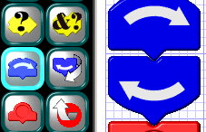
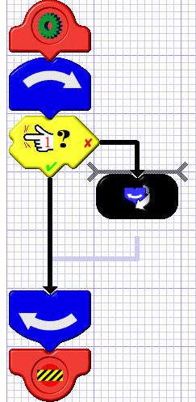

Loop Tiles
 Loop tiles are used to cause a section of code to repeat. These tiles are always inserted in pairs: one to mark the beginning of the loop, and one to mark the end. For this reason, you should always insert the loop itself first, before you start inserting its contents. Otherwise, you will have to cut and paste the contents into the loop.Loops come in two flavors: indefinite and counted. An indefinite loop will loop forever unless specifically instructed to exit. A definite loop will repeat a certain fixed number of times, up to 255 (unless it's exited sooner). The loop in the example at the left is an indefinite loop.
There's no practical limit to the number of indefinite loops you can have in a program or how deeply they can be nested (unless you consider 64 nested loops to be a "practical" limit). There is a limit to the number of counted loops you can have, however. It's arrived at as follows: In each subroutine, count the maximum degree to which counted loops are nested (i.e. contained within one another). Add these numbers together for all your subroutines. The total has to be six or less. Once you reach this limit, you will not be allowed to exceed it, the loop counter will remain dark, and a warning "tooltip" will indicate the reason.
Exit Tiles
 An exit tile is used to escape the innermost loop it's contained in. It is used to terminate an indefinite loop or to end a counted loop before the count is up. Exit tiles can only be inserted inside loops. The program won't let you put them anywhere else. In the example at the left, the loop continually checks to see if there's an obstacle on the left and none on the right. As long as this condition holds, it keeps checking. But as soon as the condition becomes FALSE, the loop is terminated by means of an exit tile.